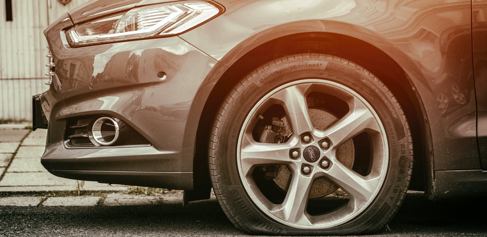

Tulsa Car Accident Attorney
If you or a loved one have been in an auto accident,
you may be feeling overwhelmed and frustrated. The
aftermath of a car accident can affect your personal
and professional life as you deal with the physical,
emotional, and financial burdens that an accident
can cause. If you are struggling with the legalities
of a car accident, then you want an experienced and
knowledgeable car accident attorney by your side.
At The Rode Law Firm, a personal injury firm with
locations in Tulsa and Sapulpa, Oklahoma, we are
focused on client recovery from auto accidents and
severe injuries. We represent people in the Tulsa,
Sapulpa, Broken Arrow, Sand Springs, and Owasso,
Oklahoma areas who have suffered injuries in car
accidents by providing professional representation
both in and out of the courtroom.
If you are involved in a car accident, the steps you
take afterward directly affect your recovery. Having
the nearest law enforcement agency investigate the
wreck and a visit to the ER are prudent and highly
recommended. Many injuries, such as a herniated disc
or a concussion, may be disguised until weeks or
months after the accident. Your well-being should be
your number one priority.
Tulsa Car Accident Attorney
Sometimes the cause of an accident is a driver’s
actions or in-actions and may not be obvious to the
police and eyewitnesses, such as:
- Distracted driving
- text
- Driving aggressively
- text
- Drunk driving
- text
- Fatigued driving
- text
- Speaking or texting with a cell phone
At The Rode Law Firm, we will work with you to get
you the best outcome possible for your case. We
understand how devastating an accident can be, and
how the effects of such can be life-altering. Our
passion for helping people get back on their feet
makes us an excellent legal partner for you. We care
about you and want to help you resolve your case
fairly and quickly. With over 30 years of legal
experience, we have the skills needed to effectively
defend you as your car accidents attorney. You
deserve to be compensated fairly for your pain and
suffering.
Tulsa Car Accident Attorney
When we meet with new clients, our priority is to
establish a strong attorney-client relationship.
This will help us collaborate with you throughout
the entire legal process, and make you feel
comfortable coming to us with any questions or
concerns along the way. Communication is imperative
and constant throughout your case. We'll speak at
least once every three weeks so that both parties
are never in the dark. As our client, you will
receive a full list of do's and don'ts while we
handle your legal situation. This will guide you on
best practices so that we can get you the outcome
you deserve.
The legal process can be confusing, so you may be
wondering: how long will the process take? The
answer to this question is dependent upon your
recovery time for any injuries you may have
sustained, how your insurance company responds to
your claim, and whether or not we need to go to
trial. No matter what, your attorneys at The Rode
Law Firm will be by your side to answer any
questions or concerns as best we can.
Tulsa Car Accident Attorney
If you have suffered harm and losses in a car
accident, you have the right to make a claim for
compensation against the responsible party. We can
often recover compensation for:
- Medical expenses
- text
- Out-of-pocket expenses
- text
- Property damage
- text
- Loss of wages
- text
- Loss of earning capacity
- text
- Physical pain and suffering
- text
- Mental pain and suffering
- text
- Scarring and disfigurement
- text
- Loss of health insurance or other benefits
- text
- Loss of business and more
Tulsa Car Accident Attorney
Our auto accidents attorneys and team will work on
your case for you from start to finish. With a
proven process for client recovery, we’ll manage
your case to ensure the best recovery for you — both
physically and financially. We are located in Tulsa
and Sapulpa, Oklahoma, and we are proud to serve
clients in other areas of Oklahoma including Broken
Arrow, Sand Springs, and Owasso. Contact us today
for legal help you can count on.
#CTA
Dealing With a Issue?
Where every injury is personal. We are a different kind of law firm. Let our small, passionate group of trial lawyers fight for your rights!
Get a Consultations